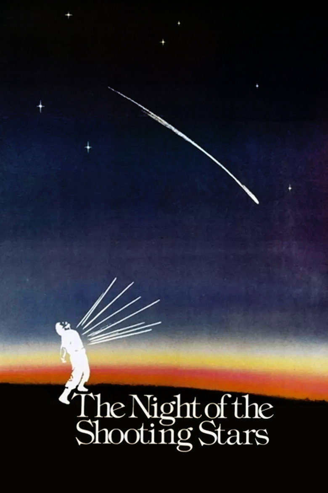

Fiche technique
- Titre original
- La notte di San Lorenzo1
- Titre international
- The Night of the Shooting Stars5
- Réalisation
- Paolo Taviani et Vittorio Taviani1
- Scénario
- Paolo et Vittorio Taviani, Giuliani G. De Negri — collaboration de Tonino Guerra16
- Photographie
- Franco Di Giacomo1
- Musique
- Nicola Piovani — première collaboration avec les Taviani1
- Montage
- Roberto Perpignani1
- Décors, costumes
- Gianni Sbarra ; Lina Nerli Taviani1
- Interprétation
- Omero Antonutti (Galvano), Margarita Lozano (Concetta), Claudio Bigagli (Corrado), Massimo Bonetti (Nicola), Enrica Maria Modugno, Paolo Hendel, David Riondino15
- Production
- Giuliani G. De Negri — RAI et Ager Cinematografica16
- Tournage
- San Miniato et la campagne toscane ; intérieurs d'église à la collégiale Sant'Andrea d'Empoli ; ferme finale à la Tenuta di Cortina e Mandorli, Montespertoli1
- Durée
- 105 minutes1 — 107 min selon la copie restaurée diffusée par Film Forum7, 108 min selon la Cinémathèque française6
- Sortie
- Italie, 1982 ; France, 20 octobre 19824
- Distinctions
- Grand Prix spécial du jury et Prix du jury œcuménique, Cannes 1982 ; David di Donatello 1983 (film, réalisation, production, photographie, montage) ; Nastro d'argento 1983 (réalisation, scénario) ; Globo d'oro et Grolla d'oro 19831 ; meilleur film de l'année pour la National Society of Film Critics et la Boston Society of Film Critics5 ; prix Venice Classics du meilleur film restauré, Venise 20181

Synopsis
Une femme veille son enfant, la nuit du 10 août — la nuit de la Saint-Laurent, celle des étoiles filantes, où l'on peut formuler un vœu. Elle lui raconte la nuit du même nom qu'elle a vécue à six ans34.
Été 1944, San Martino, un bourg de Toscane. Les Allemands minent le vieux quartier et ordonnent à la population de se rassembler dans la cathédrale, en promettant qu'elle y sera épargnée ; l'évêque relaie la consigne1. Une partie du village obéit. Une poignée d'habitants refuse et quitte le bourg de nuit, derrière le vieux Galvano, pour marcher à la rencontre des Américains que l'on dit tout proches14.
Ceux qui sont restés meurent dans l'église. Les fuyards, eux, traversent une campagne où l'on ne sait plus qui aide et qui dénonce : ils croisent des paysannes qui moissonnent avec les partisans, et le champ de blé devient un champ de bataille où partisans et fascistes se reconnaissent — ils sont souvent parents, amis, voisins2. Au bout de la marche, l'arrivée des Américains ; et pour Galvano et Concetta, séparés toute une vie par la différence de condition, une seule nuit ensemble4.
Contexte de production
Neuvième long métrage des frères Taviani1, La Nuit de San Lorenzo est aussi un retour : celui de deux cinéastes sur l'événement fondateur de leur propre enfance. Paolo et Vittorio Taviani sont nés à San Miniato, en Toscane, et leur père — avocat — siégea dans la première commission d'enquête municipale sur le massacre de 19441.
Ils avaient déjà filmé cette histoire. En 1954, avec Valentino Orsini et sous le parrainage de Cesare Zavattini, ils signent leur premier film, San Miniato, luglio '44 — un documentaire d'enquête sur le massacre du 22 juillet 1944, alors unanimement attribué aux troupes allemandes en retraite8.
Vingt-huit ans séparent le documentaire de la fiction, et tout le sens du film tient dans ce que les Taviani ont changé entre-temps : non pas les faits, mais le régime du récit. Vittorio Taviani l'a formulé sans ambiguïté : « dans le film, nous n'avons pas raconté les choses telles qu'elles se sont déroulées mais au contraire telles qu'elles se sont métamorphosées dans la conscience des survivants, dans l'imaginaire collectif »4. Ce n'est plus une enquête, c'est une transmission.
La production, portée par Giuliani G. De Negri pour la RAI et Ager Cinematografica16, marque la première rencontre des Taviani avec Nicola Piovani1, qui deviendra l'un de leurs compagnons de route.
Ne pas filmer dans le vrai duomo
Un choix de tournage résume à lui seul la méthode du film. Les Taviani ont tourné à San Miniato et dans la campagne alentour, mais ils ont refusé de filmer l'église dans la vraie cathédrale : ils lui ont substitué la collégiale Sant'Andrea d'Empoli, la charge émotionnelle du duomo étant, disent-ils, restée trop forte1. Dans le même mouvement, le bourg change de nom : San Miniato devient San Martino1. Le film déplace le lieu réel de quelques kilomètres et d'une syllabe — exactement le travail que la mémoire opère sur ce qu'elle ne peut pas regarder en face.
Structure narrative
Tout le film est tenu par un cadre : une femme adulte raconte à son nourrisson une nuit qu'elle a traversée à six ans. L'Enciclopedia del Cinema note que le récit s'ouvre « come una ninna nanna » — comme une berceuse — et que cette énonciation devient le principe organisateur du film, qui superpose deux strates temporelles : le présent du souvenir et l'août 19442.
Le dispositif est plus retors qu'il n'y paraît, car il empile trois distances. Ce que nous voyons a été vu par une enfant de six ans ; il est raconté par la femme qu'elle est devenue ; il est adressé à un enfant trop petit pour comprendre. Le film n'est donc jamais un témoignage : c'est un souvenir déjà mis en forme pour être transmis, et la mise en forme fait partie de ce qui est transmis.
Cette licence assumée autorise deux choses que le réalisme interdirait. D'abord les ellipses : un conte a le droit de sauter ce qu'il ne veut pas dire. Ensuite le merveilleux, qui pourra surgir en plein champ de blé sans que le film ait à s'en excuser — puisqu'il n'a jamais promis autre chose qu'un souvenir.
Le corps du récit, lui, est celui d'un exode. Il progresse par étapes — le départ nocturne, la traversée des champs, la rencontre des partisans, la bataille, l'arrivée des Américains — sans héros unique : le protagoniste est un groupe. Ce choix est politique autant que narratif. La libération, dans ce film, n'est pas obtenue par une armée mais par une décision collective de désobéir à un ordre, ce qui suffit à en faire un film de résistance sans jamais en faire un film de guerre.
Mise en scène et procédés techniques
La photographie de Franco Di Giacomo installe une Toscane d'été, mûre et écrasée de lumière, que les Taviani composent en tableaux. O'Donoghue situe leur langage visuel dans l'héritage de la peinture médiévale, de la Renaissance et du baroque : des cadres composés qui chargent les gestes ordinaires d'une valeur rituelle, et un paysage qui « n'est jamais simplement un paysage », mais le lieu où l'activité humaine et le trauma historique se croisent3. L'Enciclopedia del Cinema parle d'une esthétique « arcaicizzante », d'une rigueur « quasi ieratica »2. J. Hoberman disait la même chose plus vite : le film « a la terrestrité angélique de l'art du Quattrocento »7.
L'église : le sanctuaire retourné
La séquence de la cathédrale est le centre moral du film, et sa mise en scène repose sur une inversion de signes. O'Donoghue relève que la croix, falsifiée par les fascistes pour désigner les bâtiments à détruire, devient l'instrument même de la trahison ; le lieu d'asile par excellence se referme en « brasier inéluctable »3. Sur l'explosion, les Taviani posent l'Offertorium du Requiem de Verdi — un choix que O'Donoghue interprète justement : chez ces cinéastes communistes, la musique sacrée ne vient pas racheter la scène, elle sert de monument aux morts3. La consolation est refusée à l'image ; elle est concédée au seul deuil.
Les guerriers d'Homère
C'est la séquence dont tout le monde se souvient. Dans la bataille du champ de blé, la petite Cecilia voit un fascista tomber sous les lances de guerriers antiques surgis de nulle part5. Le film ne présente pas cela comme un miracle : il le présente comme ce qu'une enfant de six ans a mis à la place de ce qu'elle ne pouvait pas regarder. Le merveilleux n'est pas un ornement lyrique, c'est un mécanisme de défense — et le film a l'honnêteté de le montrer comme tel, en revenant aussitôt au cadavre réel. Les Taviani font ici, en une image, la théorie de leur propre film : voilà comment un événement se métamorphose dans une conscience.
La bataille entre parents
La bataille du champ de blé refuse le partage habituel des rôles. Les fuyards y rejoignent des femmes qui moissonnent avec les partisans, jusqu'à l'arrivée des camions fascistes ; et l'affrontement se joue « nonostante i partigiani e i fascisti siano spesso parenti, amici, vicini » — bien que partisans et fascistes soient souvent parents, amis, voisins2. La guerre civile est filmée non comme un combat entre deux camps, mais comme une catastrophe de famille. Aucun fasciste n'est un étranger.
Reste le régime de ton, qui est le plus difficile à tenir et que la critique a immédiatement identifié comme la signature du film : la comédie ne s'interrompt pas devant l'horreur, elle s'y mêle. Pauline Kael le formulait en une phrase — le film est « si robuste que ses moments les plus tragiques peuvent être vertigineusement comiques »7.
Personnages principaux
Galvano
Omero Antonutti — que les Taviani avaient révélé en père de Padre Padrone — donne à Galvano une autorité qui ne repose sur rien d'institutionnel1. Ce n'est ni un chef militaire, ni un élu, ni un notable : c'est un vieil homme dont on suit l'avis parce qu'on l'a toujours suivi. Sa décision — refuser la cathédrale, partir dans la nuit — est le seul acte véritablement héroïque du film, et il consiste à désobéir à la fois à l'occupant et à l'évêque. Le personnage porte la thèse politique des Taviani sans jamais l'énoncer : la survie du groupe tient à ce qu'un homme du peuple a préféré son propre jugement à deux autorités constituées.
Concetta
Margarita Lozano incarne la femme que Galvano a aimée toute sa vie sans pouvoir la rejoindre, la condition sociale les séparant4. Le film leur accorde une nuit, une seule, au terme de l'exode. Ce dénouement intime, greffé sur un récit de massacre, est ce qui empêche La Nuit de San Lorenzo d'être un film commémoratif : la nuit de la Saint-Laurent est celle où l'on formule un vœu, et le film prend au sérieux l'idée qu'un vœu privé de vieillards puisse être exaucé le même jour qu'une libération collective.
Cecilia, l'enfant qui regarde
La fillette de six ans dont le regard porte le récit est le personnage le plus important du film et le moins interprété : elle voit, elle ne commente pas. C'est par elle que passent les deux gestes décisifs — le merveilleux des guerriers homériques, et la voix adulte qui, quarante ans plus tard, raconte. Note documentaire : les sources divergent sur son identification au générique — la notice anglophone la nomme Cecilia et attribue le rôle à Micol Guidelli5, la notice française l'appelle Belindia et écrit Miriam Guidelli4. Nous laissons la divergence ouverte plutôt que de trancher entre deux fiches.
Le groupe
Les fuyards forment un protagoniste collectif où chacun n'a droit qu'à quelques traits — Corrado, Nicola, les paysannes moissonneuses1. Ce refus de la hiérarchie des rôles est cohérent avec le projet : un conte transmis par une communauté ne peut pas privilégier un destin individuel, sans quoi il cesserait d'être le conte de tout le monde.
Thèmes
Les axes de ce film se laissent nommer séparément — nous adoptons donc la forme du relevé titré.
1. Le vœu, contre l'événement
Le titre ne désigne pas une date militaire mais une coutume : la nuit du 10 août est celle où les étoiles filantes autorisent un vœu46. Placer sous ce signe le récit d'un massacre, c'est refuser de faire de l'Histoire l'unique juge de ce qui compte. La formule que Paolo Taviani donnait du film dit exactement cela : « quand tout est perdu, tout peut encore être sauvé »2. Le film ne prétend pas que le vœu remplace l'événement ; il montre qu'il survit à côté de lui.
2. La mémoire comme métamorphose
C'est le thème dont procèdent tous les autres, et les Taviani l'ont revendiqué : raconter les choses « telles qu'elles se sont métamorphosées dans la conscience des survivants »4. L'Enciclopedia del Cinema le confirme du dehors : les Taviani explorent « l'evoluzione di questo episodio nel ricordo » plutôt qu'ils ne restituent un témoignage brut2. Le film assume donc d'être un document sur la mémoire, et non sur l'événement — position magnifique en esthétique, et coûteuse en histoire, comme la suite l'a montré (voir le Chant VIII).
3. La guerre civile entre proches
Le film tient que la ligne de front de 1944 passait à l'intérieur des familles2. Il n'y a donc pas, dans La Nuit de San Lorenzo, de fascistes venus d'ailleurs : il y a des voisins en chemise noire. C'est ce qui rend la bataille du blé insoutenable, et c'est aussi ce qui distingue le film de la plupart des récits de la Résistance produits en Italie : le mal n'y est pas importé, il est domestique.
4. Le sacré retourné
La croix qui désigne les maisons à détruire, l'église qui devient un piège, le Requiem de Verdi utilisé comme épitaphe et non comme absolution3 : le film opère méthodiquement le retournement des signes religieux. L'évêque relaie l'ordre allemand1, et ceux qui lui obéissent meurent ; ceux qui suivent un vieux paysan survivent. Le jugement est sévère — mais il n'est pas anticlérical au sens polémique : le film ne se moque de rien, il constate un abandon.
5. L'enfance comme instance de récit
Enfin, le film soutient qu'un événement historique n'est pleinement transmis que lorsqu'il est passé par une forme — conte, berceuse, épopée. La séquence homérique et le cadre de la berceuse23 ne sont pas deux fantaisies mais un seul argument : ce que l'enfance métamorphose, elle le sauve de l'oubli, au prix exact de l'exactitude.
Réception critique et postérité
Présenté en compétition au 35e Festival de Cannes, le film y obtient le Grand Prix spécial du jury et le prix du jury œcuménique1. L'année suivante, il rafle l'essentiel des récompenses italiennes — David di Donatello du meilleur film et de la meilleure réalisation, Nastri d'argento, Globo d'oro, Grolla d'oro1.
L'accueil anglo-américain est encore plus enthousiaste : la National Society of Film Critics et la Boston Society of Film Critics l'élisent meilleur film de l'année5. Pauline Kael va jusqu'à le rapprocher de La Grande Illusion de Renoir5 ; David Denby y voit « certaines des séquences les plus stupéfiantes » depuis le premier Bertolucci, Jonathan Rosenbaum en retient les « moments de poésie bucolique », David Edelstein parle d'un « jalon humaniste » et d'un « chef-d'œuvre »7. En France, Gérard Legrand résume l'ambition du film d'une formule : par-delà la Toscane, « c'est l'Italie tout entière qui est appelée à témoigner pour elle-même »4. Le film a été restauré sous la supervision des Taviani eux-mêmes7 et primé à ce titre à Venise en 20181.
Ce que les archives ont fait au film
La postérité de La Nuit de San Lorenzo comporte cependant un chapitre que l'on ne peut pas passer sous silence, et que le film n'a pas choisi.
L'événement. Le massacre a eu lieu le 22 juillet 1944 vers 10 h 15, dans le duomo de San Miniato, où la population avait reçu l'ordre de se rassembler : cinquante-cinq personnes sont tuées par un projectile qui frappe l'édifice9. (Le décompte varie selon les documents : la notice de San Miniato, luglio '44 évoque vingt-huit civils8.)
La première attribution. Pendant des décennies, la responsabilité est imputée aux troupes allemandes de la 3e division de Panzergrenadiere, qui occupaient le bourg et avaient ordonné le rassemblement9. C'est la version du documentaire des Taviani de 19548, puis celle du film de 19821.
La contestation. En janvier 1983, peu après la sortie du film, une lettre publique conteste ce récit et affirme qu'au cours d'un échange d'artillerie, un obus américain a frappé la cathédrale9.
Les archives. En 2000, l'ouvrage de Paolo Paoletti 1944 San Miniato — tutta la verità sulla strage verse au dossier des documents des archives de l'armée américaine : le journal de marche du 337e bataillon d'artillerie de campagne, conservé aux National Archives de Washington, enregistre cinquante et un coups tirés à 10 h 30 sur des positions de mitrailleuses ennemies ; un obus de 105 mm pénètre par une fenêtre du côté sud-ouest et éclate près de la nef droite. La mission est notée « GOOD »9.
Les conclusions institutionnelles. En avril 2002, le magistrat militaire Marco De Paolis classe la procédure ouverte contre des « soldats allemands inconnus », en retenant l'hypothèse d'un tir d'artillerie allié erroné. En 2004, une commission historique municipale conclut que « la thèse de la responsabilité allemande apparaît insoutenable au vu de la documentation disponible ». Deux plaques jumelles, à la mairie de San Miniato, portent aujourd'hui les deux lectures9.
Il faut être précis sur ce que ce dossier met en cause, et sur ce qu'il ne met pas en cause. Le film ne se donne pas pour une reconstitution : il transpose l'événement du 22 juillet à la nuit du 10 août, change le nom du bourg, refuse de tourner dans la vraie cathédrale1, et déclare explicitement raconter une mémoire métamorphosée4. À ce titre, il n'a jamais promis l'exactitude d'un procès-verbal. Mais il est aussi vrai qu'il a donné à une attribution ensuite renversée par les archives la forme la plus durable qui soit — une œuvre couronnée à Cannes, vue dans le monde entier —, et que la version anglophone de sa notice signale le reproche qui lui en a été fait5.
Les deux propositions tiennent ensemble, et nous les laissons telles : un film peut être fidèle à la conscience de ceux qui ont survécu et avoir contribué à fixer, dans la conscience de tous les autres, une responsabilité que la recherche a depuis déplacée. C'est même, à la lettre, ce que La Nuit de San Lorenzo raconte : la manière dont un événement se métamorphose dans le souvenir. Le film aura fourni la démonstration de sa propre thèse, à ses dépens.
Conclusion
Il y a peu de films où le geste qui fait la beauté soit exactement celui qui fait la fragilité. La Nuit de San Lorenzo est de ceux-là. En passant du documentaire de 1954 au conte de 1982, les Taviani ont trouvé la seule forme capable de rendre ce qu'une enquête ne saisit pas — la peur d'une enfant, la décision d'un vieil homme, la nuit d'un vœu, la métamorphose d'un massacre en récit transmissible. Ils ont, du même mouvement, renoncé au régime de preuve qui aurait protégé leur film du démenti des archives.
Ce serait mal lire l'affaire que d'y voir une faute. Les Taviani n'ont pas falsifié : ils ont filmé, avec une honnêteté rare, l'état d'un savoir collectif à un moment donné — celui qu'ils avaient hérité de leur propre père et de leur propre ville. Et ils ont pris la précaution, dans le film même, de dire à quel régime de vérité ils s'adressaient : rideaux de théâtre, ouverture d'opéra, berceuse, guerriers d'Homère surgissant dans un champ de blé. On ne pouvait pas être plus loyalement prévenu.
Reste ce que le temps n'a pas entamé : une des rares représentations de la guerre civile italienne où l'ennemi soit un voisin, une séquence d'église dont l'inversion des signes sacrés atteint une dureté que le cinéma italien d'après-guerre s'était souvent épargnée, et une idée du récit — le conte comme mode de survie — qui n'a rien de décoratif. Quarante ans après, le film continue de poser la question à laquelle son propre destin a répondu : que transmet-on, au juste, quand on transmet une histoire vraie ?
Sources
- Wikipedia (IT), « La notte di San Lorenzo (film) » — it.wikipedia.org
- « La notte di San Lorenzo », Enciclopedia del Cinema, Istituto Treccani — treccani.it
- Darragh O'Donoghue, « The Night of the Shooting Stars », Senses of Cinema, février 2024 — sensesofcinema.com
- Wikipédia (FR), « La Nuit de San Lorenzo » — fr.wikipedia.org
- Wikipedia (EN), « The Night of the Shooting Stars » — en.wikipedia.org
- La Cinémathèque française, fiche « La Nuit de San Lorenzo » — cinematheque.fr
- Film Forum, note de programme « Paolo and Vittorio Taviani's The Night of the Shooting Stars » (copie restaurée, Cohen Media Group) — filmforum.org
- MUBI, notice « San Miniato, luglio '44 » (1954) — mubi.com
- Wikipedia (IT), « Strage del Duomo di San Miniato » — it.wikipedia.org
- Affiche : The Movie Database, notice The Night of the Shooting Stars (1982), correspondance titre et année vérifiée avant téléchargement — themoviedb.org